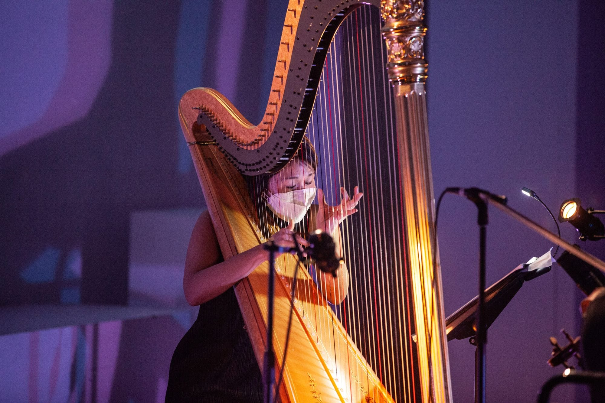

Established 2013, New York City
☼
Menu
Home
About
Calendar
Archive
Projects
Opportunities
Media
Donate
← Archive of performances
2021
Dec
2
Part of: CreArt Music Festival
Then I Knew
Culture Lab Theater, Queens, New York

← Back to the archive
See upcoming concerts
→